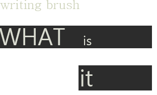

중국에서 유래된 전통 필기구와 회화도구
동물의 털로 만든 펜
중국의 문방사보 중의 하나로 분류되다
3000년전의 상조때에 사람들이 이미 붓을
사용하기 시작하였다는 것을 증명하는 충
분한 자료가 있다.그러나 붓글씨로 쓴 문
자는 오래 남기 어려워 남은 것은 갑골문
뿐이다.현재 우리가 사용하고 있는 붓은
진나라때의 장군 몽녕 (蒙恬)이 개량한것
이라고 한다. 당시 붓에 대한 호칭은 나라
마다 달랐는데 진시황이 중국을 통일한후
모두 붓으로 되였다.
전통 회화에서 공필이든 사의든 기본적으로 붓으로 선을 그린다.이렇게 형체 구조를 만든다.
전통 회화에서, 붓을 물에 묻혀 먹물을 조절하고, 텄다, 닦다, 점하다, 염색하다 등으로 물상을 묘사한다.
전통 회화에서 붓의 색조 및 분염 배염 등의 선염 기법으로 묘사하였다.